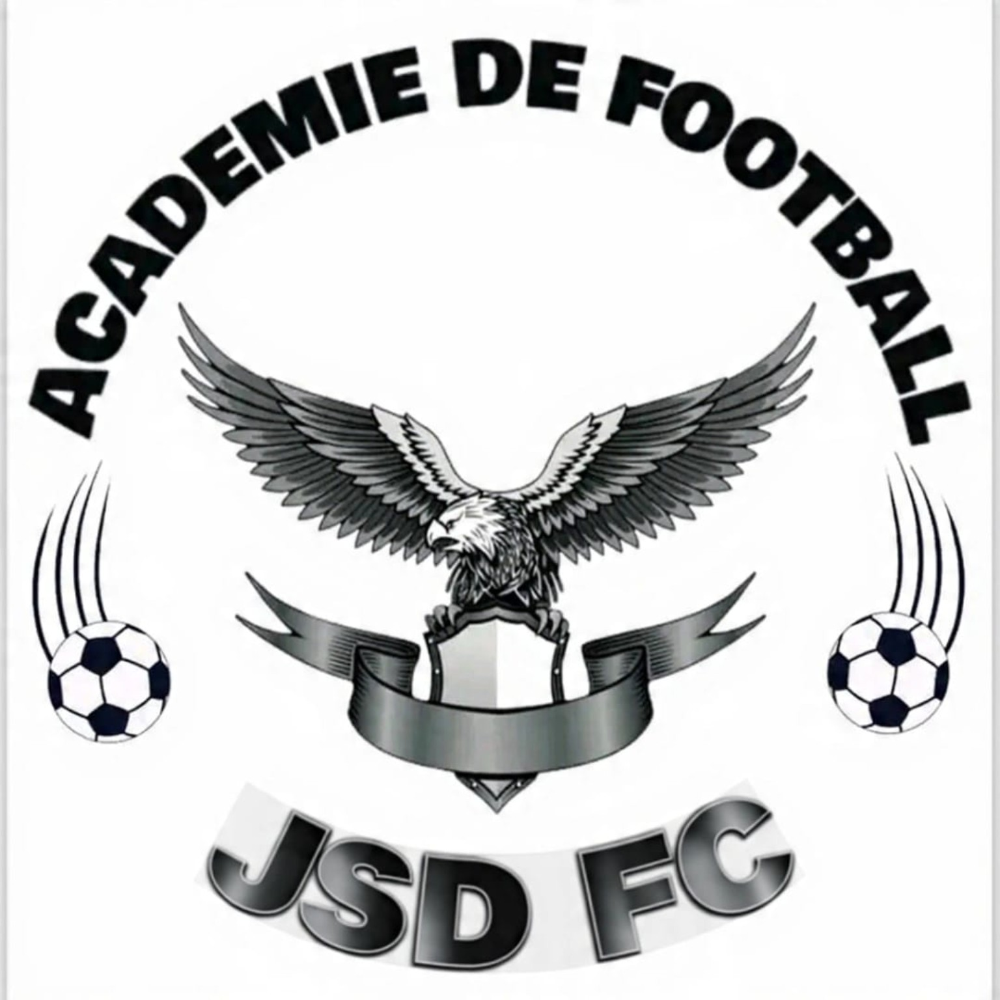

Académie de football et structure sportive dédiée à la jeunesse.
JSD FC est une académie et structure sportive dédiée à la promotion du sport, à l'éducation et à l'accompagnement des jeunes talents.
Email : academiejsdfc@gmail.com